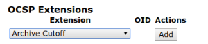
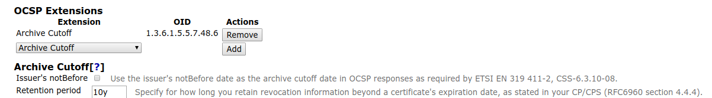

Archive Cutoff
The OCSP archive cutoff extension is an OCSP extension which can be sent in OCSP responses. The extension and how it is used is defined in section 4.4.4 of RFC 6960.
An OCSP responder MAY choose to retain revocation information beyond a certificate's expiration. The date obtained by subtracting this retention interval value from the producedAt time in a response is defined as the certificate's "archive cutoff" date.
To illustrate, if a server is operated with a 7-year retention interval policy and status was produced at time t1, then the value for ArchiveCutoff in the response would be (t1 - 7 years).
OCSP-enabled applications use an OCSP archive cutoff date to contribute to a proof that a digital signature was (or was not) reliable on the date it was produced even if the certificate needed to validate the signature has long since expired. If t1 is the date when the OCSP response was signed, archiveCutoff denotes the date until which revocation information is available. As an example, with a retention period of 7 years a response signed at 2013-11-13 sets ArchiveCutoff to 2006-11-13, indicating that the status "good" for a certificate that expired before 2006-11-13 is not reliable, because the information base of the OCSP responder is not guaranteed (but may) include revocation information of that certificate.
The archive cutoff extension is also used in ETSI EN 319 411-2.
CSS-6.3.10-08 [CONDITIONAL]: If OCSP is provided, the OCSP responder should use the ArchiveCutOff extension as specified in IETF RFC 6960 [i.9], with the archiveCutOff date set to the CA's certificate "valid from" date.
EJBCA can compute the archive cutoff date based on either the retention period and the time the OCSP response was produced (as described in RFC 6960), or based on the issuer's "valid from" date as described in ETSI EN 319 411-2.
Configuration
The archive cutoff extension is configured using an OCSP key binding.
Edit an OCSP key binding and add an Archive Cutoff extension in the OCSP Extensions section by selecting an extension in the list and clicking Add.
Configure the added Archive Cutoff extension in the Archive Cutoff section of the OCSP key binding.
Specify the Retention period (to derive the archive cutoff date as described in RFC 6960) or enable Use the issuer's notBefore date as the archive cutoff date to stay compliant with ETSI regulations.
Manual Testing
To confirm that the archive cutoff extension has been configured correctly, use the following openssl command:
openssl ocsp -issuer ManagementCA.cacert.pem -CAfile ManagementCA.cacert.pem -cert cert.pem -req_text -resp_text -url http://localhost:8080/ejbca/publicweb/status/ocspThe openssl command outputs a OCSP response like the following example:
OCSP Response Data: OCSP Response Status: successful (0x0) Response Type: Basic OCSP Response Version: 1 (0x0) Responder Id: BB689F7058D62AB4B8C13866FAC3CF8FC1986ADA Produced At: Jan 11 13:02:37 2019 GMT Responses: Certificate ID: Hash Algorithm: sha1 Issuer Name Hash: 27CBED5E54A990CCD30F644E3715C75B1DECFDEE Issuer Key Hash: BB689F7058D62AB4B8C13866FAC3CF8FC1986ADA Serial Number: 363F7FBC823AEB6F Cert Status: good This Update: Jan 11 13:02:37 2019 GMT Response Single Extensions: OCSP Archive Cutoff: Jan 11 13:02:37 2018 GMT Response Extensions: OCSP Nonce: 041055845EE5620B834F19419A43467207DA...If you enable debug logging for the application server, you can see when the archive cutoff extension has been added to the OCSP response:
2019-01-11 14:23:38,155 DEBUG [org.cesecore.certificates.ocsp.OcspResponseGeneratorSessionBean] (default task-1) Added id-pkix-ocsp-archive-cutoff (producedAt - <retention period> = <archive cutoff date>) to OCSP response with cert ID serial number <serial number>.If the setting Use the issuer's notBefore date as the archive cutoff date is enabled, the log line is instead going to look like:
2019-01-11 14:23:38,155 DEBUG [org.cesecore.certificates.ocsp.OcspResponseGeneratorSessionBean] (default task-1) Added ETSI EN 319411-2, CSS-6.3.10-10 id-pkix-ocsp-archive-cutoff (issuer notBefore = <archive cutoff date>) to OCSP response with cert ID serial number <serial number>.